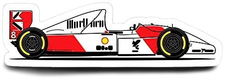

P1
Mercedes · starts 2nd
63.3%
podium probability
win chance 26.5%
Miss Finished 5th
- + Starts 2nd
- + Qualified 3rd
- + Recent average finish of 2.8
ANT
Slipstream
Formula 1 podium predictions

Made after qualifying and saved before the race, then compared with the result. Raw model output, not calibrated. Has beaten a grid-order baseline on Brier score, log loss and top-3 overlap (85 races through 2026 round 20).
Raw model output, not calibrated. Has beaten a grid-order baseline on Brier score, log loss and top-3 overlap (84 races through 2026 round 19). Grid is the qualifying order, so penalties are not included.
1 of 3 picks finished on the podium. On the podium but not picked: VER (2nd), HAD (3rd).
P1
Mercedes · starts 2nd
63.3%
podium probability
win chance 26.5%
Miss Finished 5th
ANT
P2
McLaren · starts 1st
51.1%
podium probability
win chance 13.1%
Hit Finished 1st
NOR
P3
Mercedes · starts 7th
30.8%
podium probability
win chance 15.8%
Miss Finished 4th
RUS
| Finish | Driver | Team | Grid | Model rank | Podium probability |
|---|---|---|---|---|---|
| 1 | NOR | McLaren | 1 | 2 | 51.1% |
| 2 | VER | Red Bull | 21 | 8 | 7.7% |
| 3 | HAD | Red Bull | 5 | 4 | 25.8% |
| Rank | Driver | Team | Grid | Podium probability | Finished |
|---|---|---|---|---|---|
| 1 | ANT | Mercedes | 2 | 63.3% | Miss 5th |
| 2 | NOR | McLaren | 1 | 51.1% | Hit 1st |
| 3 | RUS | Mercedes | 7 | 30.8% | Miss 4th |
| 4 | HAD | Red Bull | 5 | 25.8% | 3rd |
| 5 | LEC | Ferrari | 14 | 22.3% | 8th |
| 6 | LAW | RB F1 Team | 3 | 15.2% | 7th |
| 7 | HUL | Audi | 4 | 8.9% | 10th |
| 8 | VER | Red Bull | 21 | 7.7% | 2nd |
| 9 | HAM | Ferrari | 20 | 5.4% | 9th |
| 10 | BEA | Haas F1 Team | 6 | 2.2% | 17th |
| 11 | PIA | McLaren | 10 | 2.0% | 6th |
| 12 | ALO | Aston Martin | 8 | 1.2% | 12th |
| 13 | ALB | Williams | 9 | 0.9% | 15th |
| 14 | CAM | Haas F1 Team | 11 | 0.7% | 20th |
| 15 | LIN | RB F1 Team | 18 | 0.6% | 11th |
| 16 | SAI | Williams | 12 | 0.6% | 19th |
| 17 | COL | Alpine F1 Team | 13 | 0.5% | 13th |
| 18 | GAS | Alpine F1 Team | 15 | 0.5% | 14th |
| 19 | STR | Aston Martin | 16 | 0.5% | DNF |
| 20 | BOT | Cadillac F1 Team | 17 | 0.5% | DNF |
| 21 | BOR | Audi | 19 | 0.5% | 16th |
| 22 | PER | Cadillac F1 Team | 22 | 0.5% | 18th |
Probabilities are independent for each driver, so they do not add up to 100%. Reasons are the three features that moved a pick's score most, strongest first: + raised it, - lowered it.
Open as its own pageRaw model output, not calibrated. Has not yet beaten a grid-order baseline (83 races through 2026 round 18). Grid is the qualifying order, so penalties are not included.
2 of 3 picks finished on the podium. On the podium but not picked: ANT (3rd).
P1
Mercedes · starts 2nd
72.9%
podium probability
Miss Finished 6th
RUS
P2
Ferrari · starts 1st
70.8%
podium probability
Hit Finished 2nd
HAM
P3
Red Bull · starts 4th
67.6%
podium probability
Hit Finished 1st
VER
| Finish | Driver | Team | Grid | Model rank | Podium probability |
|---|---|---|---|---|---|
| 1 | VER | Red Bull | 4 | 3 | 67.6% |
| 2 | HAM | Ferrari | 1 | 2 | 70.8% |
| 3 | ANT | Mercedes | 5 | 5 | 29.6% |
| Rank | Driver | Team | Grid | Podium probability | Finished |
|---|---|---|---|---|---|
| 1 | RUS | Mercedes | 2 | 72.9% | Miss 6th |
| 2 | HAM | Ferrari | 1 | 70.8% | Hit 2nd |
| 3 | VER | Red Bull | 4 | 67.6% | Hit 1st |
| 4 | LEC | Ferrari | 3 | 40.1% | 4th |
| 5 | ANT | Mercedes | 5 | 29.6% | 3rd |
| 6 | HAD | Red Bull | 7 | 15.8% | 12th |
| 7 | NOR | McLaren | 6 | 10.3% | 5th |
| 8 | PIA | McLaren | 12 | 2.1% | 7th |
| 9 | LAW | RB F1 Team | 8 | 0.9% | 9th |
| 10 | LIN | RB F1 Team | 8 | 0.6% | DNF |
| 11 | BOR | Audi | 13 | 0.5% | 11th |
| 12 | HUL | Audi | 10 | 0.4% | 16th |
| 13 | SAI | Williams | 15 | 0.4% | 15th |
| 14 | GAS | Alpine F1 Team | 9 | 0.4% | 10th |
| 15 | COL | Alpine F1 Team | 11 | 0.3% | 8th |
| 16 | PER | Cadillac F1 Team | 20 | 0.3% | 17th |
| 17 | BEA | Haas F1 Team | 14 | 0.3% | DNF |
| 18 | BOT | Cadillac F1 Team | 21 | 0.3% | DNF |
| 19 | ALO | Aston Martin | 17 | 0.2% | DNF |
| 20 | ALB | Williams | 16 | 0.2% | 14th |
| 21 | HIR | Haas F1 Team | 18 | 0.2% | 13th |
| 22 | STR | Aston Martin | 19 | 0.2% | DNF |
Probabilities are independent for each driver, so they do not add up to 100%. Reasons are the three features that moved a pick's score most, strongest first: + raised it, - lowered it.
Open as its own pageRaw model output, not calibrated. Has not yet beaten a grid-order baseline (85 races through 2026 round 20). Grid is the qualifying order, so penalties are not included.
2 of 3 picks finished on the podium. On the podium but not picked: LEC (2nd).
P1
Red Bull · starts 2nd
84.4%
podium probability
Hit Finished 3rd
VER
P2
Mercedes · starts 1st
78.0%
podium probability
Hit Finished 1st
ANT
P3
Red Bull · starts 3rd
68.5%
podium probability
Miss Finished 6th
HAD
| Finish | Driver | Team | Grid | Model rank | Podium probability |
|---|---|---|---|---|---|
| 1 | ANT | Mercedes | 1 | 2 | 78.0% |
| 2 | LEC | Ferrari | 4 | 4 | 42.2% |
| 3 | VER | Red Bull | 2 | 1 | 84.4% |
| Rank | Driver | Team | Grid | Podium probability | Finished |
|---|---|---|---|---|---|
| 1 | VER | Red Bull | 2 | 84.4% | Hit 3rd |
| 2 | ANT | Mercedes | 1 | 78.0% | Hit 1st |
| 3 | HAD | Red Bull | 3 | 68.5% | Miss 6th |
| 4 | LEC | Ferrari | 4 | 42.2% | 2nd |
| 5 | RUS | Mercedes | 6 | 14.7% | 8th |
| 6 | HAM | Ferrari | 5 | 13.8% | 4th |
| 7 | PIA | McLaren | 7 | 5.0% | 7th |
| 8 | NOR | McLaren | 8 | 3.3% | 5th |
| 9 | GAS | Alpine F1 Team | 11 | 0.7% | 10th |
| 10 | LIN | RB F1 Team | 9 | 0.7% | 12th |
| 11 | LAW | RB F1 Team | 10 | 0.6% | 9th |
| 12 | COL | Alpine F1 Team | 14 | 0.5% | DNF |
| 13 | HUL | Audi | 12 | 0.4% | 11th |
| 14 | BOR | Audi | 13 | 0.3% | 13th |
| 15 | ALO | Aston Martin | 15 | 0.2% | 16th |
| 16 | BOT | Cadillac F1 Team | 22 | 0.2% | DNF |
| 17 | SAI | Williams | 19 | 0.2% | 18th |
| 18 | PER | Cadillac F1 Team | 21 | 0.2% | 19th |
| 19 | OCO | Haas F1 Team | 17 | 0.2% | 14th |
| 20 | ALB | Williams | 20 | 0.2% | 17th |
| 21 | BEA | Haas F1 Team | 16 | 0.1% | DNF |
| 22 | STR | Aston Martin | 18 | 0.1% | 15th |
Probabilities are independent for each driver, so they do not add up to 100%. Reasons are the three features that moved a pick's score most, strongest first: + raised it, - lowered it.
Open as its own pageFor every driver in a race, the model gets a short list of facts that were known before the start:
Nothing from the race itself is ever used. That is the one rule the project is built around: a prediction for a race only uses what was known before that race.
The model is an average of two simpler models. The first is a logistic regression: a formula that weighs a handful of facts (where the driver starts and qualified, the gap to pole, any grid penalty, and how well the driver and team have been doing). The second is XGBoost, which builds many small decision trees that ask questions like "does this driver start in the top three?" and nudge the answer a little. Both are kept small on purpose, because there are only a few dozen races to learn from. The final number is the mean of the two.
To learn, the model looks at every earlier race. For each driver it sees the facts above and whether they finished on the podium (the top three). Over time it learns which combinations of facts usually lead to a podium. For a new race, it gives each driver a number from 0% to 100%: how likely that driver is to finish in the top three, judging by how similar drivers did before. It is not a simulation of the race.
Each driver gets their own number, and a podium has three places, so across the whole field the numbers add up to around 300%, not 100%. A driver at 80% is not "80% to win". It means the model thinks a podium is very likely.
Each pick card also shows a win chance. It comes from a second model of the same kind, taught on whether the driver won the race. The win chances of the whole field add up to 100%, because exactly one driver wins. This number is usually more useful than the podium chance for telling the leader from the rest. The order of the podium is a different matter: the model is no better at it than the grid order, so the three picks are ordered by podium chance and the order should be read with care.
Under each of the three picks you see the three facts that moved the number most. They come from a method called SHAP, applied to the decision-tree half of the model. The other half is a simple formula, so the reasons describe part of the number, not all of it. A plus sign means the fact raised the driver's chance. A minus sign means it lowered it. The strongest comes first.
A model can look clever by accident if it has already seen the answers. So every race is tested like this: pretend it is the day before that race, teach the model only with earlier races, make the predictions, then compare them with what really happened. This is called walk-forward testing, and it is repeated for every race after the first five.
The model is also compared with two simple guesses. One says the first three on the grid will finish on the podium. The other is a basic formula that only looks at starting position. If the model cannot beat these, it has not added anything useful.
| Method | Top-3 overlap | Exact podium | Brier score | Log loss |
|---|---|---|---|---|
| First three on the grid | 66.3% | 23.5% | n/a | n/a |
| Formula on grid position only | 66.3% | 23.5% | 0.069 | 0.243 |
| Earlier version: XGBoost alone | 66.7% | 22.4% | 0.071 | 0.231 |
| Slipstream model | 68.2% | 24.7% | 0.066 | 0.215 |
Top-3 overlap is the share of the real podium drivers that were in the model's top three picks. Exact podium counts the races where all three picks were right. Brier score and log loss judge the percentages themselves. For both of those, lower is better.
On every one of these measures the model does better than both simple guesses. The gap is small, though, and a few dozen races is not many, so part of it could be luck.
It only knows about grid penalties if the official starting grid was entered before the race. Otherwise it assumes the qualifying order. It also knows nothing about weather, tyre choices, safety cars or car upgrades, and it has only a few seasons of results, so some circuits have little history. The percentages are raw model output. In the tests above they came out close to the real rates, with the model a little cautious: drivers rated above 35% reached the podium slightly more often than predicted, and drivers rated below 10% slightly less often. A "70%" is still a likelihood, not a promise.
Treat the numbers as a ranking of who looks strongest, not as a promise. Results and qualifying come from the Jolpica F1 API.